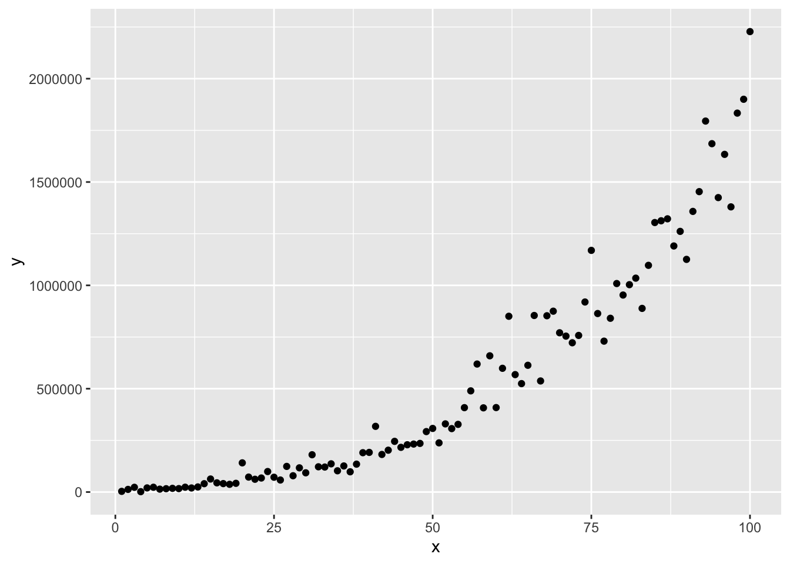
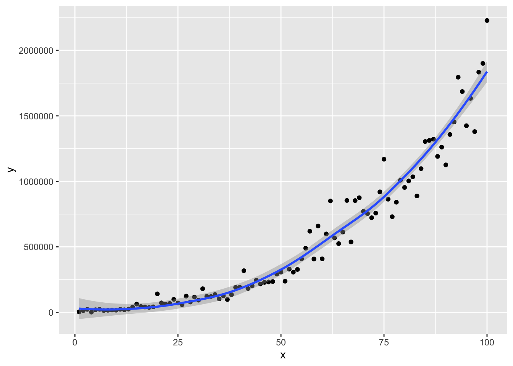
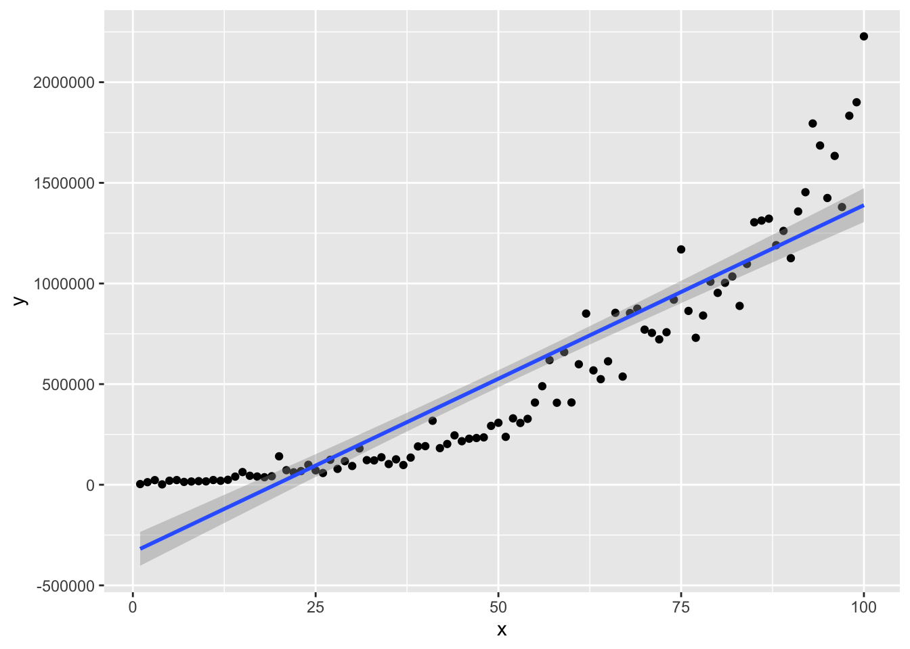
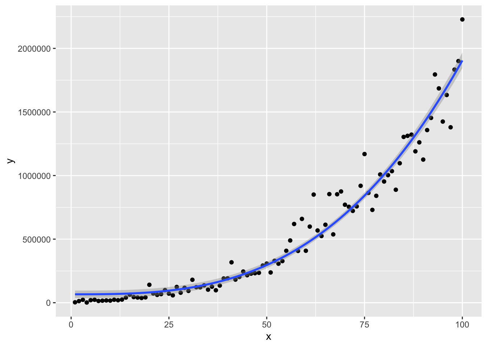

使用 ggplot2 进行曲线拟合
王诗翔 · 2020-09-25
分类:
r
标签:
r
ggplot2
regression
fit
有读者询问如何对散点图拟合非线性的曲线。实际上我们通常看到的无论是直线拟合还是各种曲线拟合都属于广义线性模型。
这里我们构造一组数据来看看如何使用 ggplot2 来拟合数据。
构造的数据因变量大致是自变量 3 次方：
set.seed(1234L)
x <- 1:100
y <- (c(1:100) + rnorm(100, mean = 20, sd = 5))^3
df <- data.frame(
x = x,
y = y
)使用 ggplot2 绘制散点图：
library(ggplot2)
p <- ggplot(df, aes(x, y)) +
geom_point()
p
我们先直接利用 geom_smooth() 对散点进行平滑拟合，默认使用的是 loess 方法。
p + geom_smooth()
#> `geom_smooth()` using method = 'loess' and formula 'y ~ x'
修改方法使用线性回归。
p + geom_smooth(method = "lm")
#> `geom_smooth()` using formula 'y ~ x'
如果针对的是非线性回归，而我们已经看到了大致的模式，我们可以通过 R 支持的公式来设定如何拟合散点。
p + geom_smooth(method = "lm", formula = y ~ I(x^3))
除了直接 geom_smooth() 进行拟合，还可以先使用 lm() 建立模型，生成对应的值，然后使用线条添加在图上也是可以的。
如果你还想要在图中添加公式，可以阅读 Stack Overflow 以下几篇问答：
- https://stackoverflow.com/questions/7549694/add-regression-line-equation-and-r2-on-graph
- https://stackoverflow.com/questions/49418552/adding-regression-line-equation-and-r2-on-separate-lines-graph
- https://stackoverflow.com/questions/37494969/ggplot2-add-regression-equations-and-r2-and-adjust-their-positions-on-plot